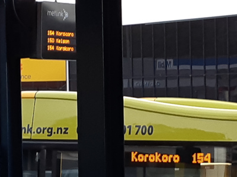

NEWS & UPDATES
2022 AGM and Antarctica Talk
Sunday 11th December 2022, 3pm - Korokoro School HallWe only held our belated 2021 AGM in August this year so the 2022 AGM should be fairly short. Proposed agenda:
- Officers' end of year reports
- Financial report
- Election of officers
- Discussion item: proposed zoning change in lower Korokoro
If you would like to add anything to the agenda, or to stand for Chair, Treasurer or Secretary then please drop Daniel a line.
To make it more interesting, Jenny will give a short talk and show photos from her recent stint living and working in Antarctica, where she was part of a team of NZ scientists studying how the continental ice shelf responds to global warming. Everyone welcome. We will have the talk first, starting 3pm and then move to the AGM.
Usual Covid precautions apply: please don’t come if you feel unwell, wear a mask, and we will be physically distancing.
Local Council Elections
October 2022If you've not already voted in this month's local council elections, you might be interested in the Vote Climate website, which has collated candidates responses to a short questionnaire on environmental issues.
Call for subs
September 2022This is call for membership subs for this new financial year (1st August 2022 - 31st July 2023).
Membership remains $20 per household and can be paid into the bank account (01-0505-0104075-01), please use your name and "subs" as references. Email Jenny Black (KEG Treasurer) when you make the payment if you'd like an email confirmation.
Being a member entitles you to vote at the AGM. We use the funds to pay for rat traps, tools and other occasional expenses. We're aware that times are tough for some households right now, so please don't feel pressured to pay subs this year. You can play a valuable role by devoting time to trapping, weeding, planting and clean up days without being a paid up member.
Korokoro Clean-Up
Sunday 18 September 2022, 2pm - 4pmWe will meet in front of the Memorial at the bottom of London Road and will break into groups to tidy up around the memorial, in the Old Catholic Cemetery and along Pito-One Road.
Please bring gloves. We will bring bin bags and tools.
AGM Summary
September 2022Thank you to all those who attended the AGM. Minutes are available for any who would like a copy (contact Daniel but the essential action points are:
- This was the COVID-delayed AGM for 2021. However, in order to get back on track and ensure that AGMs are reasonably close to the financial year, we will hold the 2022 AGM in a couple of months’ time.
- We will keep subs at $20 per household for this financial year (see above for details of how to pay).
- We will host a Korokoro meeting for the local Government elections – details to follow.
- Andre and trapping volunteers have had a great year increasing the number of backyard trapping and creating new trapping lines in the reserves. We will send round a list of current and proposed lines, it would be great if you could pick a line to help maintain. In the meantime, if you would like to a trap and box for your backyard, drop us a line.
- Various developments and proposed developments were discussed, including P2G, 70 Maungaraki Road Development and the proposed District Plan Change 56 to allow for greater intensification of housing, which will impact on Rakeiora Grove and the bottom of London Road. If you want to know more about the change see the HCC plan 56 website.
2021 AGM
Sunday 28th August 2022, 3pm - Korokoro School HallAgenda:
- End of year reports
- Accounts - Jenny
- Election of officers
- Report on the School enviro group - Clive
- Trapping - Andre
- P2G developments - Quentin
- 70 Maungaraki Road development
- Planning Petone clean-up day
- Order of plants from HCC
- Progress of Lower Hutt climate response plans - Kaz Yung
Julie, Daniel and Jenny are happy to stand again for Sec, Chair and Treasurer respectively. However, a change around in roles is often good so if you want to put yourself forward for any of the roles, please do.
Usual Covid precautions apply: please don’t come if you feel unwell, wear a mask, and we will be physically distancing.
KEG Meeting
April 2022KEG meeting - Now that we are down to traffic light orange, we will be organising a KEG meeting (the first one of 2022) in the next few weeks. On the agenda: the resource consent decision in relation to 70 Maungaraki Road development. Please drop me a line with anything else you think we should discuss.
Wilding Pines on Reserve Land
April 2022HCC has given us permission to remove smaller wilding pines on reserve land. So, please tell us about any you know. If they are too big for us to remove, we will let the Council know, so they can get their contractors on to them.
Trapping
April 2022Andre has been doing a great job setting new up trap lines on the old millworkers' track, Singers Road and Korokoro Road. If you would like to help maintain one of these lines, please let us know.
If you have a trap that you are not currently using, autumn is a good time to get going. Last year Danielle put together some helpful notes on trapping. If you don't have a trap but would like one, please let us know.
Weta Hotel Event
Sunday 28th November 2021, 2-4pm - Percy Scenic Reserve, by the Duck PondDianne and Mark Keeman are putting in place Weta motels along the Percy Reserve Tracks. There will be a ‘find the weta home’ competition and a quiz for children. Plus, a picnic (BYO). All welcome.
Contact Daniel with any queries.
Weeding and Watering
Saturday 27th November 2021, 3-5pm - Korokoro Stream, Belmont Regional Park, Cornish Street EntranceClive will be down on the Korokoro stream weeding and watering the native planting the Korokoro school did last year. Any help would be appreciated. Hedge clippers would be useful.
Contact Daniel with any queries.
Annual Korokoro Clean-Up
Sunday 31st October 2021The postponed Korokoro Clean-up will take place Sunday 31 October 2pm. We will meet in the garden at 107A Maungaraki Road (Julie’s place) and go from there to the start of the Sugarloaf Track, walking down along the stream to Akatea Road, cleaning away rubbish around the track, including in the stream itself.
Larger rubbish will be dragged out to a pile on the road and left for council. The super-committed will then walk the rest of the stream track down to the bottom and clean up some of the rubbish around the memorial and old Catholic Cemetery near the bottom of Korokoro Road.
We will have rubbish bags and disinfectant for hands but good idea to wear gloves.
Reporting Invasive Weeds to the Council
October 2021Now spring has sprung, the weeds are thriving. So, it is good time to report any sightings of invasive species on public land. If you drop Ants a line he will liaise with Council to get them removed.
Rat Traps
October 2021We have given out 4 more rat-traps in the last 2 weeks and this weekend will start trapping on public land (near the bottom of London Road). If anyone else would like a trap please drop Daniel a line. We have a handful left.
Free Mulch
October 2021There are big piles of free mulch on Honiana Te Puni Reserve, Petone Beach – near the carpark by the water ski club, west of the stream mouth. The arborists who left it have told us it should be clean of weeds and anyone is welcome to take some.
Daniel is still talking to HCC about a permanent mulch pile but this should keep people going for a while.
We will use some of it on the Inanga Love Park. We will organise a weeding and mulching session there in the next couple of months.
Trapping Information Session
Sunday 4th July 2021, 3pm - Korokoro School Hall Note: New date after being postponed due to level 2 lockdown.Danielle from Zealandia will be running a trapping information - come along to hear about types of traps, where to put them, bait, maintenance etc.
We will bring along some Victor rat traps for anyone who would like one.
Net Zero Carbon Meeting
Sunday 30th May 2021A meeting took place between Korokoro residents and Hutt City Council to explore what can be done locally to reduce our carbon footprint. This was one of a number of meetings taking place across the city as part of the work towards creating a plan for the Lower Hutt to reach net zero carbon by 2050.
Greater Wellington Councillor Josh van Lier, came to talk about GWRC’s commitment to the electrification of the region’s transport and large-scale planting in grazed areas of the regional parks. We then worked through ideas for transport, waste reduction and household energy saving. Since over half of carbon emissions across the city come from private transport, a lot of the discussion focussed on improving the bus service, making the roads safer for cyclists and walkers and increasing EV use, as well as supporting people working and shopping locally.
We will get a record of the discussions and some of the ideas up on the KEG facebook and website over the next few weeks and we will think about how to take some of these ideas forward. If you are interested in knowing more, please drop Daniel a line.
Stream working bee
Sunday 31st January 2021 - Inanga Love ParkThank you to all those who helped with the working bee at the stream on the 6 December. Some of the posters by Kedron Parker are now up, some serious weeding done and we started to spread the mulch.
Paula Warren will be going back to continue to mulch on 31 Jan. If you are around she would welcome some help. Contact Daniel for details.
AGM
Sunday 24th January 2021, 3pm - Centenary Lookout Picnic AreaAssuming the weather is still good, we will meet at the picnic area at Centenary Lookout (follow the path up behind the playcentre). If the weather has turned, we will find somewhere indoors.
Agenda:
- Financial report
- Officers reports
- Ideas for 2021
If you would like to add an item to the agenda, please let Daniel know by Friday 22nd January 2021.
Parks Network Plan
Thank you also to those who contributed to our submissions on the Parks Network Plan. The plan has been published.
The fundamental direction of the plan has not changed (which is good, since we supported it). However, one of our specific suggestions for the investigation of a walking track from end of Titiro Moana Road to the Korokoro Valley has been added to the plan. It also contains a stronger emphasis on community involvement which we along with many other submitters called for.
Working Bee
Sunday 6th December, 2pm - Inanga Love Park(Postponed from last weekend)
We will be weeding, mulching and putting up new artwork at the Inanga Love Park site at the Korokoro Stream.
We have tools but bring gloves and old clothes (as glue will be involved). However, we could do with these if you have them lying around:
- an extra (clean) broom
- an extra paint tray that we can use for pasting
Meet at Inanga Love Park on the banks of the lower reaches of the Korokoro Stream, between the railway bridge and the Hutt Road.
Development at 70 Maungaraki Road
Last year Cutriss the developers organised a meeting with Korokoro with us to discuss their proposals for a residential development at 70 Maungaraki Road and listen to local residents' concerns about the potential traffic and environmental impact of the development.
We have learnt that in October they applied to HCC for resource consent for 13 properties. The land is currently zoned rural residential. However, because the zoning will be reviewed as part of the HCC’s general review of the District Plan, the Council suggested that they simply apply for resource consent.
We have been provided with Cutriss application and have requested further information from HCC about their communications with Cutriss in relation to the proposal. We will put this material on the website and discuss the proposals at our next meeting.
Bird monitor
Thanks to those who took part in this year’s bird monitor. It is really important to keep it up every year in order to build up a picture of local birdlife
KEG October Meeting
Sunday 11th October, 3pm - Korokoro PlaycentreOur spring meeting will take place this Sunday 3pm at the Korokoro Playcentre.
GWRC councillor Josh van Lier will be speak about the Park Network Plan and future of Belmont Regional Park as well as other GWRC stuff from, electric buses to supporting wetlands.
We will discuss whether to make our own submission on the Park Network plan, including whether to support a proposed new trail into Belmont RP from the end of Titiro Moana Road. Other items:
- Update on progress with community mulch-pile
- events at Percy Reserve on 30 October
- November bird monitor
- Planning ahead for planting in Korokoro next year
Please let Daniel know if you want to add anything to the agenda.
KEG Meeting
Saturday 27th June, 4pm - Korokoro School HallWe will be holding our first post-lockdown KEG meeting this Saturday in Korokoro School Hall. Note this will be at 4pm rather than the originally proposed time of 3pm.
Suggested agenda:
- Trapping – reviewing and improving
- Planning this year's Korokoro clean-up
- Compulsory micro-chipping of cats - discussion of a proposal from MIRO
- Proposal for sale of buildings and land in Belmont Regional Park
- Setting KEG membership fees for next financial year
- Local resilience: feedback from composting meeting
- Fish monitoring in the Galbraith's Gully Stream
Please let Daniel know if you want to add anything. Hope to see you there.
Native Seedlings
Saturday 8th FebruaryWe have been given 200 manuka and 50 tarata/lemonwood seedlings that urgently need re-potting and planting.
Up for 20 for free but donation to KEG appreciated. If you would like any please Contact Daniel.
Galbraith’s Gully stream with Amanda Valois
Saturday 18th JanuaryFreshwater scientist Amanda Valois of NIWA will be visiting Korokoro to carry out an assessment of the health of the Galbraith’s Gully stream.
We will be meeting Amanda at 11am at the London Road entry to Galbraith’s Gully (car-park at the bottom of London Road and Korokoro Road) to walk a bit of the stream before going with her up to the Akatea Road entry to the Holdaway Reserve in order to take a look at the stream before it enters the Gully. We are likely to finish at around 12 noon and, time permitting, may have a cup of tea.
Amanda’s visit has been organised by KEG but discussed with HCC officers and Te Atiawa kaumatua. Anyone is welcome come along. Please drop Daniel a line if you are interested in joining us.
KEG AGM
Sunday 8th December, 3pm - 107A Maungaraki RoadImportant: day is Sunday and time is 3pm not 2pm as previously advertised.
Agenda:
- End of year reports
- Accounts (may have to be deferred if Jenny still overseas)
- Election of officers for 2020
- Review of 2019 actions
- Events and proposed actions for 2020
- Discussion of 70 Maungaraki Road Development
Discussion of the 70 Maungaraki Road Development arises out of a meeting with the developers, Cutriss, that took place a few weeks back.
Traps
We are down to our last 5 rat traps. We will making/buying more in the next few months but if you would like to grab one of the current batch please contact Daniel.
Friends of the Belmont Regional Park Meeting
Thursday 14th November, 7pm - The Woolshed, Belmont Regional Park entrance at the end of Stratton StreetThis Thursday evening there will be a meeting of Friends of the Belmont Regional Park. KEG members are welcome to go along to talk about the future of the Park.
Bird Monitoring in Korokoro
1st-14th NovemberAt our last meeting Danielle from Zealandia talked to us about the importance (and simplicity) of helping build up a picture of the bird life in the western hills through annual monitoring.
This involves noting the number and species of the birds we see or hear in and around our gardens in a 5 minute period. Those who are taking part can select a day and time that suits them, but we will be doing the monitoring between 1st and 14th November.
We will record the results on ebird and will then repeat the exercise around the same time next year.
So, it would be great if as many people as possible could take part.
Danielle has drawn up some guidelines. These explain how to take part and how to record the findings (either directly into ebird or by sending them to her).
If you have queries about the monitor or about bird life in Korokoro more generally, please contact Danielle (see the PDF linked to above for her email address).
Meeting with developers re 70 Maungaraki Road Development
Saturday 9th November, 2pm - Korokoro School HallCutriss, the developers of the proposed development at 70 Maungaraki Road, have agreed to meet with local people to present details of the development and then open up for comments and questions.
Everyone is welcome to attend. Please drop Julie a line with any queries about the meeting or the proposed development.
KEG Meeting
Sunday 27th October, 3pm - 107A Maungaraki RoadOur next meeting will take place this Sunday. Danielle Shanahan, Zealandia Director (and Korokoro resident) will talk to us about biodiversity in the Wellington region and monitoring the bird life in Korokoro.
Also for discussion:
- Planned Development at 70 Maungaraki Road
- Feedback from our local election meetings and a look at what the election results will mean for Korokoro
- Pest control
- Belmont Regional Park Developments
Korokoro Local Election Meeting
Tuesday 1st October, 7pm - Korokoro SchoolThis will be an opportunity for Korokoro residents to meet and ask questions of candidates for Mayoralty, Hutt City Council (Harbour Ward and City Wide) and GWRC.
KEG September Update
Spring Planting
Thank you to all those who helped with planting at the Stream and the end of Titiro Moana Road. There are now a few posters up at the stream and the artist, Kedron, is working towards a permanent installation.
Rat traps
Last week the Korokoro cubs were building rat traps, a few of which have already been put to good use. For those who still need a trap please let us know.
If you do not feel like entering kills on the trapNZ site, drop us a line and we will enter them.
Korokoro Clean-up Working Bee
Sunday 7th JulyBelmont Regional Park
We will be doing a Korokoro clean-up on Sunday 7th July - please meet at the play centre at 2pm. We are asking for volunteers to come and help clear up litter from some of the hot-spots and also to help clear the tradescantia that, following some clearance some years ago, has started to creep back into the reserves. The Council has agreed to take away what we clear and bag.
Please bring your own gloves. Get in touch with Daniel if you have any queries.
Report from KEG May meeting
Sunday 12th MayBelmont Regional Park
At our May meeting we had a lively discussion about the future of Belmont Regional Park with Quentin Duthie of the Hill Road Community Group and Peter Macham of Friends of the Belmont Regional Park. When the draft Parks Network Plan is published, we will develop some submissions.
In the meantime, KEG will join the Friends of Belmont Regional Park in order to keep updated with developments and better participate in the debates.
Preparing for local body elections
At the meeting we agreed to draft some questions to send to candidates for this year’s local body elections (once those candidates are announced). When the responses come in, we will put them on the KEG website. We will also hold a hustings meeting during the election period in which we will invite candidates to come along and discuss the issues that matter in Korokoro.
Those who have received the Korokoro newsletter will have seen that we have drafted some questions that we will forward to local body candidates. If you would like to suggest any additions or amendments, please drop Julie a line. We would like to send the questions in August.
Trapping in Korokoro
If you would like a victor rat-trap please. It would also be great if those who are already trapping could let us know about any kills, so that we can enter them on the trapNZ website.
Hutt City Council Climate Emergency Declaration
Hutt City Council is likely to be considering whether to declare a climate and biodiversity emergency at its next meeting on 27th June. The Petone Community Board will also be discussing the issue on Monday 24 June so that the views of Petone and Korokoro residents can be forwarded by the Board to Council.
It would be great if those who wish to show their support for the declaration provide their views to the Mayor, Councillors or the Community Board in advance of those meetings. One way to show support would simply be to attend Council on the 27 June 6pm.
In line with KEG's longstanding concerns about biodiversity in Korokoro and Lower Hutt, we are likely to be making some submissions in support of the Council making such a declaration to the Petone Community Board.
Please let Daniel know if you would like further information about this.
Inanga egg hunt at Korokoro Stream
Saturday 13th April, 3:30pmSarah Kachwella of Whitebait Connection, will be coming to the section of the Korokoro Stream that we have been planting, to talk about the life of the stream and to help us search for the Inanga eggs that we hope have been laid (and not washed away in the recent rains.)
It would be great to have a group of volunteers to help with the hunt and learn more about our local freshwater fish, so please come along if you're interested.
We will begin at 3.30pm, to get the best of the low tide and light conditions. Wear gumboots. Children welcome if accompanied by an adult.
Meet at Inanga Love Park on the banks of the lower reaches of the Korokoro Stream, between the railway bridge and the Hutt Road.
Drop Daniel a line if you have any questions.
154 Bus Service
November 2018If you commute into Wellington on the train and have a monthly pass, you can now ride the 154 bus service up and down the hill for free - just show your pass to the driver. (This isn't specific to the 154 service, you can ride most metlink services from zone 4 to the outer zone on your pass for free - see "MonthlyPlus pass - includes your train and bus trips").
Some more handy 154 tips:
- The 154 now runs 12 times on Saturday at hourly intervals.
- Most 154 services are timed to connect at Petone station with trains both to and from Wellington
- Pay by Snapper and transfer to the 154 from another bus anywhere on its route and your ride up the hill is free (because the 154's route is all in fare zone 4 - even for the services which go to Lower Hutt on school days)
- The last bus up the hill on weekdays is now at 6:31pm which means it is free is you have a SuperGold card (the last bus on Saturday at 6:55pm is too!)
November Pest Monitoring
November 2018Paul is currently organising the November pest monitoring in Belmont Park. If you would like to take part please drop him a line at tomtomsafc@yahoo.co.nz
Animal Pest Management Information Session
Sunday, 28th October 2018, 2.30-4.00, Korokoro School HallBruce Brewer, Animal Pest Control Officer from GWRC will be talking about and displaying some pest management options.
Stuart Reid from Predator Free Normandale will be telling us about their experience of trapping on the hills.
We will also be selling safe and effective traps at half-cost-price ($10.00 per trap, one per Korokoro resident or school family household). These traps are recommended by Hutt City Council/DOC, and have information about how to use them safely. (Please bring cash).
Contact Julie for more information about this meeting.
Report from Working Bee at Korokoro Stream
Sunday, September 30th 2018Thanks to all those who helped out our third working bee at Inanga Love Park on the banks of the lower reaches of the Korokoro Stream, and thanks also to Riba from Hutt City Council for all her support.
Plenty of weeding, mulching and planting went on. Photos to follow.
Great Kereru Count
September 21st-30th 2018The Great Kererū Count is NZ’s biggest citizen science project to help gather information on the abundance and distribution of the New Zealand pigeon — also known as kererū, kūkū or kūkupa.
Everyone in New Zealand can get involved with the Great Kererū Count, whether you see any kererū or not, sharing your observations will help build up a clearer picture of where the kererū live, how many there are and what they are feeding on.
See www.greatkererucount.nz for details.
Petone Railway Corridor Clean Up and Planting
Sunday, September 23rd 2018The Growing Places Trust and Keep Hutt City Beautiful are organizing cleaning and planting of the railway corridor. Starting at 10am at the Petone Station Platform. Finishing with lunch at Walter Nash Centre 12–1 pm.
Bring yourself, friends, family aged 11+ wearing closed-toe sturdy footwear and trousers. If you have gardening gloves or high viz-vest, please bring them, but there will be spares.
Hutt Valley-Wellington Whaitua Committee
August, 2018GWRC are now recruiting community members for the Hutt Valley-Wellington Whaitua Committee. Their website describes the remit of the committee in the following terms:
The Hutt Valley-Wellington Whaitua Committee, will be a group of local people tasked with researching and recommending tailored solutions for water issues in the catchment. Encompassing Hutt Valley, Makara, Wainuiomata, and Wellington City, the catchment is large and home to diverse communities with unique relationships to water. The committee will need public input to ensure the solutions they develop are going to work for our environment and all of those who call the whaitua home.
So if you or someone you know who is passionate about safeguarding and restoring our waterways you may want to consider applying. There is plenty of information about what being a committee member would involve on the GWRC website. However, if you would like more of a personal perspective then contact Daniel who can put you in touch with a member of the Porirua Committee, which has been up and running for a couple of years.
See the GWRC website for details of how to apply. Applications close 4th September.
Petone-to-Grenada Update
August, 2018NZTA have issued an update on the proposed road.
Report from Working Bee at Inanga Love Park
Sunday 5th August, 2018Inanga Love Park is where the Korokoro Stream passes under SH2 and the railway before entering the harbour.
Many thanks to those who came and helped at our working bee. We did a lot of weeding and some planting. The following weekend our friends from the Growing Places Trust went back and did some more planting.
We now need to plan a further working bee to paint the new mural, weed further and plant the additional plants that the Council are providing. After that we will have to sort out a regular schedule of light management in order to keep the weeds at bay.
154 Bus Service
July, 2018Korokoro now has a bus service on Saturdays! The 154 bus service now runs 12 times on Saturday at hourly intervals.
Some handy 154 tips:
- Most 154 services are timed to connect at Petone station with trains both to and from Wellington
- Pay by Snapper and transfer to the 154 from another bus anywhere on its route and your ride up the hill is free (because the 154's route is all in fare zone 4 - even for the services which go to Lower Hutt on school days)
- The last bus up the hill on weekdays is now at 6:31pm which means it is free is you have a SuperGold card (the last bus on Saturday at 6:55pm is too!)
KEG Meeting
1st July, 2018A KEG meeting was held on Sunday 1st July. Read the minutes for details of what was discussed.
Hutt City Council Long Term Plan
May 2018Hutt City recently ran a consultation on its Long Term Plan for 2018–2028. Julie presented our submissions to the Mayor and Councillors at a public meeting in the Council Chambers on 16th May 2018.
School garden
May 2018Thanks to the team of volunteers who have been helping to get the school garden in order. We held a working bee in late May to do some work on the new beds and put up a shade-house.
Second working bee at Korokoro Stream
May 2018Thanks for all those who have volunteered for this second working bee on the stream. A slight delay in sourcing new plants has meant that we have put this off until early June.
May pest monitoring
May 2018Paul will be out this weekend with the team of volunteers, helping monitor mustelid, rodent and hedgehog numbers in Korokoro Valley. GWRC’s reports on the May pest monitoring in the region’s Key Native Ecosystems will go on up on the website when it is received.
Community Bee Hives in Korokoro
May 2018Lower Hutt Charity, the Common Unity Project, have agreed to come up to Korokoro in the next couple of weeks to check out a couple of sites to see if they are suitable for communal bee hives. In the event that they report on suitable sites we will discuss whether to support the Project and host the hives at the next KEG meeting.
The latest threat to Korokoro Valley from the Petone-to-Grenada Road
April 2018Before Christmas the latest NZTA evaluation into the P2G was published. Following the Kaikoura and Wellington earthquakes the evaluation report looked at resilience and the expected costs, benefits and environmental impacts. The project evaluation queried the resilience of the preferred option and suggested that costs would be much higher than first anticipated. It also highlighted that the environmental impacts could be difficult to mitigate. The good news is that the evaluation recommends abandoning the current route; the bad news is it recommends consideration of discarded options including that of using the Korokoro Valley as a route.
KEG wrote to Minister Twyford in mid January 2018. We advocated that NZTA be steered towards more sustainable options, saying that there were good alternative ways of improving connectivity and calling on the minister to replace the discredited approach of tackling congestion through increased roading with a strategy that focusses on intelligent public and haulage transport, improved facilities for cycling and walking and public planning to reduce car use across the region. In early April the Minister responded.
We encourage you to actively oppose building a road through the Korokoro Valley.
Nets for Recycling Bins
April 2018As we head further into autumn we face the prospect of rubbish being blown all over Korokoro from open recycling bins. The solution is for as many people as possible to use the nets which go over the bins.
The Council have kindly provided us with lots of nets, at a reduced rate. If you or your neighbours need any please contact Daniel Jones and we will drop some round. (A contribution of $5 per net to help us cover our costs would be appreciated).
Working Bee at Korokoro Steam
April 2018Volunteers from KEG, with help from the Growing Places charity, spent the afternoon of Sunday 1st April weeding, planting and tidying at Inanga Love Park, at the mouth of the Korokoro Stream.

The Inanga Love Park was part of 2016 Common Ground Festival. It involved restoring the unloved section of the Stream between the culvert and the sea by removing the rubbish, establishing plant-cover to help spawning native fish and creating a series of posters about the stream and its ecology.
The original plants did not thrive over the long, hot summer and the posters were starting to look tatty. So, we have cleared some weeds, done some more planting and taken the posters down.
New posters are being created. Once they are ready we will put them up and continue with the planting.
Korokoro School Gala Fair
March 2018KEG had a stall at this year’s school gala to help raise money for the school, but we also helped reduce the waste created by the gala itself by organising compost and recycling bins and provide stall holders with suggestions for reusable/recyclable products and packaging.
With plenty of people using the bins and a reduction in the use of plastics and clingfilm this was a big step in the right direction. It was not ‘zero waste’ but we now have enough know-how to help Home and School run a genuine zero waste event next time round.
Pest Monitoring Report
February 2018Four times each year KEG volunteers check pest monitoring tunnels in the Korokoro Valley and report results to Greater Wellington Regional Council. Korokoro Valley has been identified as one of several Key Native Ecosystems (KNE) in the Wellington Region.
The Key Native Ecosystem programme aims to protect some of the best examples of native ecosystems in the Wellington region. It is working to achieve this by managing, reducing, or removing threats to their values. One of the primary threats to native plants and animals is introduced mammals, including rats and mustelids. Control of these pest animals is therefore undertaken at most KNE sites throughout the region. Regular monitoring is carried out to determine the effectiveness of these control efforts.
The latest pest monitoring event was in February. For Belmont-Korokoro that showed that rat tracking rates were on target, mice tracking was low, mustelid tracking was absent, but Hedgehogs were up by 33%. For more details, read the latest small mammal monitoring report.
KEG Meeting
28th January, 2018A meeting about P2G and other matters was held at the end of January. Read the minutes for this meeting for more details.
AGM
3rd December, 2017The KEG AGM was held on 3rd December. The new committee is:
- Chair: Julie Haggie
- Secretary: Daniel Jones
- Treasurer: Jenny Black
Thanks to the retiring committee members for their service.
The full minutes are available from this website.